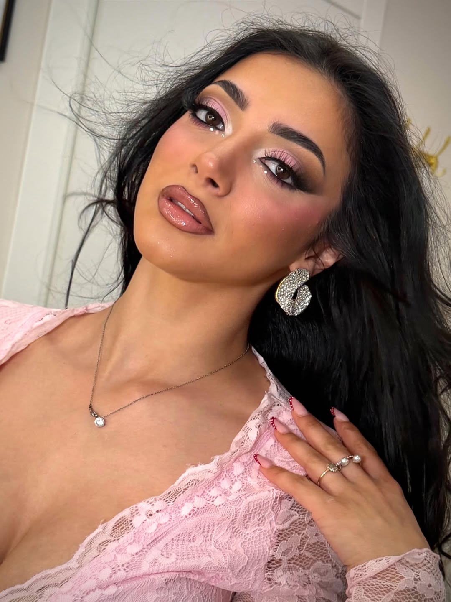

Ascolto
Prima di scegliere colori e intensità, capisco cosa vuoi comunicare e cosa vuoi evitare.

Sono Agata, makeup artist specializzata in bridal, eventi e soft glam. Il mio lavoro parte dalla pelle e dalla personalità: voglio che ogni cliente si senta elegante, sicura e ancora profondamente se stessa.
"La differenza non è truccare di più. È sapere cosa lasciare leggero, cosa definire e cosa far respirare."
Non conta solo il risultato finale: contano puntualità, ascolto, ordine, igiene, calma e capacità di adattarsi alla luce reale.
Prima di scegliere colori e intensità, capisco cosa vuoi comunicare e cosa vuoi evitare.
Base stratificata, prodotti mirati e texture pensate per durata, comfort e fotografia.
Un servizio ordinato e calmo, soprattutto nei momenti in cui il tempo e l'emozione contano.
Il risultato deve essere bello, ma anche gestito bene: tempi chiari, ascolto e un'esperienza tranquilla fanno la differenza.
Durante matrimoni, eventi e set, mantengo un ritmo ordinato anche quando i tempi sono stretti.
Il look viene pensato per pelle, luce e foto reali, non solo per essere bello nei primi dieci minuti.
Dalla prova al giorno dell'evento, ogni scelta viene ricordata e rifinita senza ripartire da zero.
Che sia per il matrimonio, un evento o uno shooting, parto sempre da te e dal modo in cui vuoi sentirti.
Scrivi in DirectDesign & development by green